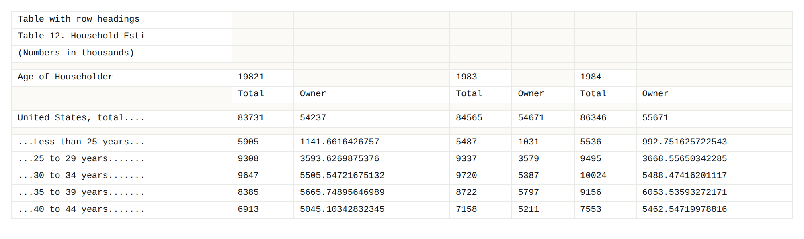
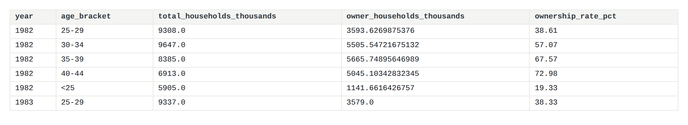
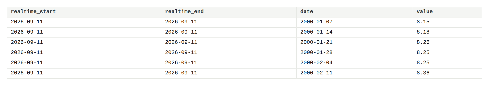
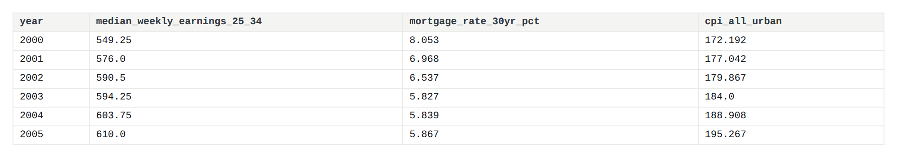
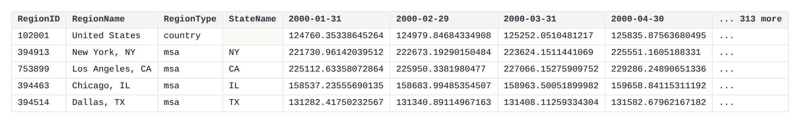
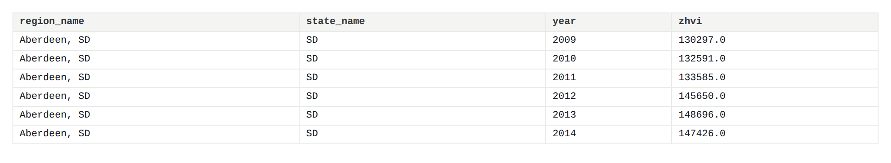
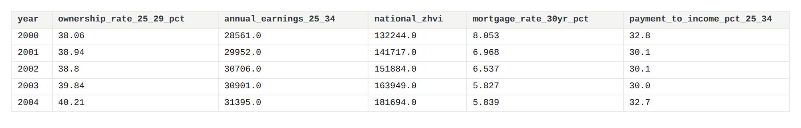
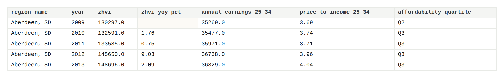

Data Prep
Three sources, and what was wrong with each one
Data Collection
One programmatic course combined with 2 direct downloads. This was chosen so that each one covered a dimension the others lacked. Time depth is covered from the census survey, economic context from FRED and geographic details from Zillow. The FRED dataset was retrieved through the API described below which returned 2771 individual observations across 8 series and saved each raw response to disk so that the collection step is auditable and repeatable. The two downloaded sources were taken from their publishers' own distribution pages.
Dataset Considerations
Three sources were selected, each covering something the others cannot. The project is centered on three sources: the Census Housing Vacancy Survey for homeownership by age of householder, the Federal Reserve Bank of St. Louis FRED API for earnings, mortgage rates, prices and inflation, and the Zillow Home Value Index for home values at metropolitan level. Cleaning reshapes each into tidy tables, which is non-trivial because none of the three arrives in an analysable form. The Census workbook repeats an entire year-block down the sheet, the FRED series arrive at three different frequencies, and the Zillow file is 319 columns wide. Dependent variable, the homeownership by age of householder is provided by the Census Housing Vacancy Survey starting in 1982 and using age categories fine enough to distinguish between those aged 25 to 29 and those aged 30 to 34. This is important since the two age categories are on either side of the normal first purchase and data sources using a broader “under 35” category lump them together. Economic variables include the median weekly earnings by age category, the 30-year fixed mortgage rate, national homeownership rate, median sales price, the Case–Shiller index, the Consumer Price Index and housing starts and are obtained through the FRED API. Getting the data programmatically from an API rather than downloaded ensures reproducibility and enabled inclusion of the mortgage rate and inflation data that are key to the affordability analysis. The geographical component of the data comes from the Zillow Home Value Index that reports a median home value in 894 metro areas monthly since 2000.
Several limitations follow from these choices and are carried through the analysis. None of the three sources is individual-level, so the project describes aggregate rates rather than the circumstances of particular households. Earnings are reported nationally rather than by metropolitan area, which means metro-level affordability measures compare local prices against a national income and cannot capture the fact that salaries in San Jose differ from salaries in Cleveland. The Zillow index covers the middle tier of the market, between the 33rd and 67th percentiles of value, and therefore excludes both the cheapest and most expensive segments. Homeownership figures are reported for the age of the householder rather than of every occupant, so a 27-year-old living in a parent's home is counted under that parent's age. Each of these is a genuine constraint on what the results can support, and each is noted again where it bears on a specific finding.
Next comes feature engineering, which generates the variables used in the analysis: price-to-income ratio, number of years needed to accumulate savings for a down-payment, mortgage payment per month, and the payment ratio relative to income, alongside measures of growth, volatility, and ranking for each metro area.
The modelling stage answers the research questions posed above in two classes. Clustering and principal component analysis, unsupervised models, seek whether there are types of housing market, and how they differ. Naive Bayes, decision trees, support vector machines, regression and neural networks, supervised models, seek whether the affordability of a market can be predicted by its pricing characteristics, and which variables contain that information. Each model is described in turn, outlining its underlying assumptions, parameter space, and limitations on what its findings mean.
API source
Source: Federal Reserve Bank of St. Louis, FRED API
Documentation: fred.stlouisfed.org/docs/api/fred
Base endpoint: https://api.stlouisfed.org/fred/series/observations
Example GET request
https://api.stlouisfed.org/fred/series/observations
?series_id=MORTGAGE30US
&observation_start=2000-01-01
&file_type=json
&api_key=YOUR_KEYEight series were retrieved this way, returning 2,771 raw observations. fred_api_fetch.py
Downloaded sources
Historical Census Housing Vacancy Survey tables were provided as Excel files available on the website of the Census Bureau. Table 12 was used, showing the number of total households and owner-occupied households by age of the householder each year since 1982. This table was selected over the quarterly tables provided by the Bureau due to the fact that the latter provide one total figure for all householders under 35 years old, whereas Table 12 breaks down this age category into age ranges that are needed for this project. Zillow Home Value Index was available as a comma-delimited file on the research section of Zillow. The metropolitan file in the middle price range was used to provide a typical home value in 894 metropolitan areas since January 2000.
01Census Housing Vacancy Survey, Table 12
Raw sample

What needs to change
- Locate each repeating
Age of Householderblock and read the paired total and owner columns beneath it. - Strip trailing dot leaders and footnote letters from row labels before they can be matched.
- Resolve years that appear in more than one block, keeping the later revised estimate.
- Convert counts stored as text into numbers.
- Compute the ownership rate, which the file does not contain, as owner households divided by total households.
Cleaned output

Code used
def parse_histtab12(path=f"{RAW}/histtab12.xlsx"):
import openpyxl
ws = openpyxl.load_workbook(path, data_only=True)["Sheet1"]
rows = list(ws.iter_rows(values_only=True))
targets = {"less than 25 years": "<25", "25 to 29 years": "25-29",
"30 to 34 years": "30-34", "35 to 39 years": "35-39",
"40 to 44 years": "40-44"}
records, i, n = [], 0, len(rows)
while i < n:
if rows[i][0] and str(rows[i][0]).strip() == "Age of Householder":
⋮ # walk each repeating year-block, match age labels, dedupe revised years02BLS and Census via the FRED API
Raw sample

What needs to change
- Collapse eight series arriving weekly, monthly and quarterly onto a single annual grain.
- Drop
realtime_startandrealtime_end, which carry no analytical information. - Treat the string
"."as missing, since reading it as a value turns the whole column into text. - Convert median weekly earnings to an annual figure.
- Deflate nominal dollars to constant 2025 terms using the Consumer Price Index.
Cleaned output

Code used
def fetch_series(series_id, key):
"""Return (metadata_dict, {year: [values]})."""
meta_payload = api_get("series", {"series_id": series_id, "api_key": key, "file_type": "json"})
meta = {}
if meta_payload and meta_payload.get("seriess"):
s = meta_payload["seriess"][0]
meta = {"series_id": series_id, "title": s.get("title"), "units": s.get("units"), …}
obs = api_get("series/observations", {
"series_id": series_id, "api_key": key, "file_type": "json",
"observation_start": START,
})
⋮ # writes the raw response to disk, then collapses to annual values, skipping FRED's "." missing marker03Zillow Home Value Index, metro
Raw sample

What needs to change
- Reshape 319 month columns into rows, so each observation occupies one row.
- Reduce each metro-year to a single value, taking the latest month reported in that year.
- Fill the empty
StateNameon the national row, which a default groupby silently discards. - Separate the country row from the 894 metropolitan rows, since they feed different tables.
Cleaned output

Code used
def parse_zhvi(path=f"{RAW}/Metro_zhvi_uc_sfrcondo_tier_0.33_0.67_sm_sa_month.csv"):
wide = pd.read_csv(path)
id_cols = ["RegionID", "SizeRank", "RegionName", "RegionType", "StateName"]
date_cols = [c for c in wide.columns if c not in id_cols]
long = wide.melt(id_vars=id_cols, value_vars=date_cols,
var_name="month", value_name="zhvi").dropna(subset=["zhvi"])
long["year"] = long["month"].str.slice(0, 4).astype(int)
# StateName is empty for the national row; without dropna=False groupby
# silently discards it and the whole national series disappears.
long["StateName"] = long["StateName"].fillna("")
⋮ # groups to one value per metro-year, keeping the latest month reportedMerging the Sources
Each source answers a different part of the question and none answers it alone. The Census survey records whether young households own but says nothing about what a home costs or what they earn. FRED records earnings and borrowing costs but only nationally. Zillow records prices across 894 metropolitan areas but nothing about who buys. Affordability is a relationship between all three, so the measures this project depends on, price against income and payment against income, exist only after the join.
Both merges use year as the key, because that is the finest grain the three sources share:
the Census and FRED series are national, so nothing narrower is available to join on.
Merge 1: national_annual
An inner join on year across the ownership table, the FRED annual table, and the national row of the Zillow data. Inner rather than outer, because a year missing any of the three cannot support the derived measures. The result spans 2000 to 2025 and is 26 rows rather than 44, since ownership data begins in 1982 but prices and earnings begin in 2000, and 2026 ownership is not yet published. Five derived columns are added after the join: price-to-income, years to a down payment, monthly mortgage payment, payment as a share of income, and earnings in real terms.

Merge 2: metro_year_panel
A left join on year, attaching each national row to every metropolitan area in that year. This is one-to-many by design, and it has a consequence worth stating plainly: earnings and the mortgage rate are identical across all 894 metros within a year and vary only down the time axis. They are national controls rather than local measurements, and no model should treat them as distinguishing one city from another. The result is 19,288 rows, 894 metros across 2000 to 2025.

Code used
# ---- national annual table -------------------------------------------------
national = own_wide.merge(fred, on="year").merge(national_zhvi, on="year")
national["price_to_income_25_34"] = (national["national_zhvi"] /
national["annual_earnings_25_34"]).round(2)
⋮ # years to down payment, monthly payment, and payment-to-income follow the same pattern
national.to_csv(f"{OUT}/national_annual.csv", index=False)
# ---- metro-year panel with engineered features -----------------------------
panel = zhvi[zhvi.region_type == "msa"].copy()
panel = panel[panel.year.between(2000, 2025)].sort_values(["region_id", "year"])
⋮ # growth, volatility, percentile rank, and affordability quartile computed per metro
panel["affordability_quartile"] = (panel.groupby("year")["price_to_income_25_34"]
.transform(lambda s: pd.qcut(s, 4, duplicates="drop", labels=False) + 1
if s.notna().sum() >= 4 else pd.Series(index=s.index, dtype="float")))
panel.to_csv(f"{OUT}/metro_year_panel.csv", index=False)Assumptions
- Annual earnings are estimated as median weekly earnings × 52.
- Years-to-down-payment assumes 15% of gross income saved each year.
- Monthly payment figures assume a 30-year fixed loan at 80% loan-to-value.
- Each year's home value is the latest month Zillow reported that year, so 2026 is partial.
- Earnings are national, so metro affordability compares local prices against a national income.
Links to Raw Data & Code
- histtab12.xlsx : raw HVS workbook
- Metro_zhvi_uc_sfrcondo_tier_0.33_0.67_sm_sa_month.csv : raw Zillow CSV
- data_raw/fred/ : raw FRED API responses, 8 JSON files
- fred_api_fetch.py : API collection script
- build_datasets.py : cleaning pipeline
- make_eda_figures.py : figure generation
- data_clean/ : cleaned tables